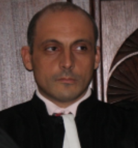
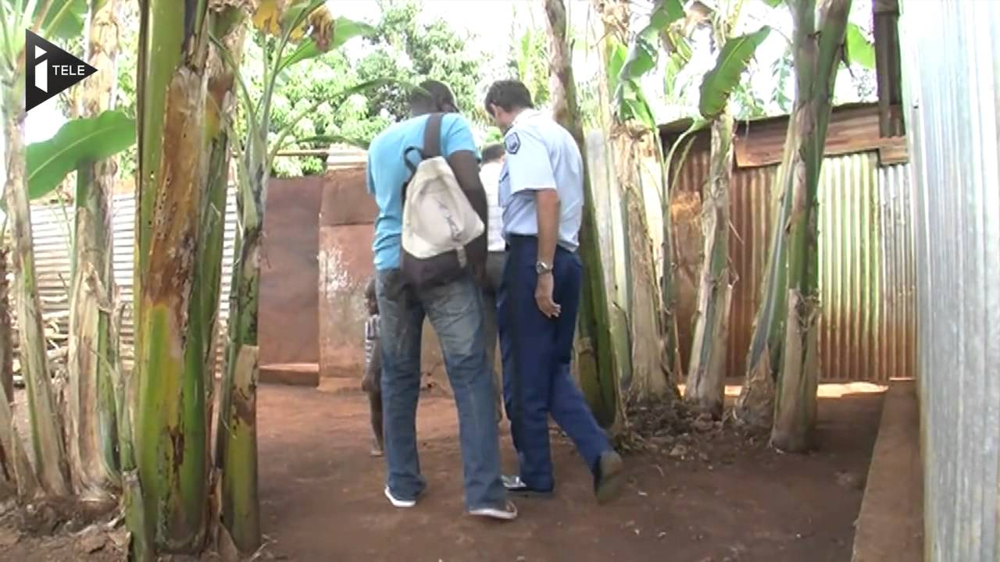
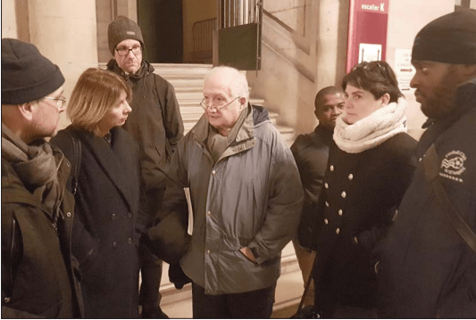

Une expertise médicale peu catégorique
Le comité rappelle que la mise en accusation puis la condamnation s’appuient essentiellement sur une expertise médicale qu’il considère comme peu catégorique.

Justice • Indépendance • Vérité
« Une nouvelle affaire Dreyfus ? »
Ancien juge d'instruction à Mayotte, Hakim Karki a été condamné à 10 ans de prison pour viol, accusation qu'il nie et dénonce comme une machination destinée à l'éliminer.
Son indépendance et son refus des compromissions lui ont valu l'hostilité de sa hiérarchie.
Une affaire grave, sensible, qui interroge le fonctionnement de la justice et la protection réelle de l’indépendance des magistrats.
« Je suis innocent »
Pourquoi ce site ?
Le comité souhaite rendre accessibles les éléments de contexte, les dates clés, les articles et les démarches de soutien. L’objectif n’est pas de créer du bruit, mais de permettre à chacun de se faire une idée à partir d’un dossier structuré.
Le parcours judiciaire
Le comité rappelle les étapes majeures d’un dossier qui, selon lui, reste marqué par de nombreuses zones d’ombre.
Mayotte devient département français. Hakim Karki y exerce comme juge d’instruction dans le contexte exigeant de l’entrée pleine et entière du territoire dans la République.
Découverte du corps de Roukia. Roukia, 18 ans, est retrouvée morte d’une overdose sur une plage de Mayotte.
Affaire du chrome hexavalent. Nouvelle enquête sensible menée par le juge Hakim Karki.
Hakim Karki est accusé d’un viol, accusation qu’il conteste.
Après près de sept années d’instruction, il est renvoyé devant une cour d’Assises.
Première condamnation à 8 ans de prison.
Condamnation en appel à 10 ans de prison. Hakim Karki purge actuellement cette peine en détention.
Les points qui interrogent
Le comité rappelle que la condamnation s’appuie, selon lui, sur un dossier fragile, une instruction incomplète et des éléments qui auraient dû nourrir le doute.
Le comité rappelle que la mise en accusation puis la condamnation s’appuient essentiellement sur une expertise médicale qu’il considère comme peu catégorique.
Une durée exceptionnelle qui, selon le comité, n’a pas permis de dissiper les zones d’ombre du dossier.
Absence de reconstitution, confrontation tardive, zones d’ombre non investiguées : autant d’éléments que le comité juge problématiques.
Le comité estime que de nombreux témoignages et éléments de preuve embarrassants pour la version de la plaignante ont été occultés.
Les deux jurys d’Assises auraient délibéré plus de 10 heures chacun sur une seule question, indice selon le comité d’un doute qui aurait dû bénéficier à l’accusé.
Le huis clos a empêché la presse et l’opinion publique d’en savoir davantage sur une affaire qui touche à l’État de droit.
Notre appel
À l’issue de deux procès de plusieurs semaines chacun, le comité considère que la motivation des deux jugements n’a retenu aucun des arguments de la défense, comme si le débat contradictoire n’avait pas eu lieu.
C’est donc à la presse, à l’opinion publique et aux citoyens attachés au respect effectif de l’État de droit que nous nous adressons aujourd’hui.
Revue de presse
La revue de presse permet de comprendre les événements, les enquêtes sensibles et le contexte mahorais dans lequel s’inscrit le parcours du juge Hakim Karki.
Consulter la revue de presse →Un juge de Mayotte incarcéré pour viol

Regarder la vidéo sur YouTube (nouvel onglet)Activer cette vidéo transmet des données à Google/YouTube et peut entraîner l’utilisation de traceurs. En savoir plus
Les premiers articles rapportant son action en tant que juge datent de 2011. La Revue de presse couvre une période large permettant de dresser le contexte général qui préside à l'affaire du viol proprement dit.
Cette affaire n'a par ailleurs pas de sens si elle est retirée de son contexte. Or, la Justice a délibérément choisi de ne pas tenir compte de ce contexte (accédez à la Revue de Presse)
L'affaire Roukia débute le 15 janvier 2011 à Mayotte, lorsque le corps de Roukia Soundi, 18 ans, est découvert sur une plage de Trévani. L'autopsie révèle une overdose d'héroïne, une drogue rare sur l'île. (...)
📖 Lire l'article completLa départementalisation de Mayotte en 2011 a révélé de graves dysfonctionnements institutionnels et judiciaires. (...)
📖 Lire l'article completLe juge Hakim Karki, à Mayotte, a été confronté à de nombreuses pressions institutionnelles. Lors de l'affaire Roukia, son enquête a mis en lumière l'implication de membres du GIR dans un trafic de stupéfiants, ce qui a conduit à des tentatives de dessaisissement et à des tensions avec sa hiérarchie. (...)
📖 Lire l'article completComment agir ?
Rejoindre le comité, écrire à Hakim Karki, relayer le site ou participer aux événements : la page d’accueil doit guider le visiteur sans l’égarer.

💥 "Une victoire de la justice"
Pour les avocats, ce procès était un déni de justice. Le ténor du Barreau de Paris, après des décennies d'expérience et de procès retentissants, avait du mal à comprendre ce verdict.
🚨 "C'est tout simplement incompréhensible"